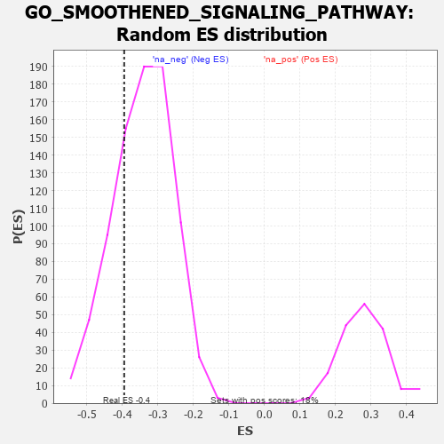

| | | Dataset | 7d |
| Phenotype | NoPhenotypeAvailable |
| Upregulated in class | na_neg |
| GeneSet | GO_SMOOTHENED_SIGNALING_PATHWAY |
| Enrichment Score (ES) | -0.39474505 |
| Normalized Enrichment Score (NES) | -1.1536126 |
| Nominal p-value | 0.26642334 |
| FDR q-value | 0.6945359 |
| FWER p-Value | 1.0 |
Table: GSEA Results Summary
 Fig 1: Enrichment plot: GO_SMOOTHENED_SIGNALING_PATHWAY
Fig 1: Enrichment plot: GO_SMOOTHENED_SIGNALING_PATHWAY
Profile of the Running ES Score & Positions of GeneSet Members on the Rank Ordered List
| PROBE | GENE SYMBOL | GENE_TITLE | RANK IN GENE LIST | RANK METRIC SCORE | RUNNING ES | CORE ENRICHMENT | | 1 | DISP3 | | | 110 | 1.525 | 0.0411 | No |
| 2 | FOXF1 | | | 176 | 1.136 | 0.0739 | No |
| 3 | SHOX2 | | | 288 | 0.842 | 0.0902 | No |
| 4 | SUFU | | | 443 | 0.665 | 0.0948 | No |
| 5 | HES5 | | | 661 | 0.571 | 0.0880 | No |
| 6 | HHAT | | | 1053 | 0.474 | 0.0557 | No |
| 7 | STK36 | | | 1193 | 0.448 | 0.0543 | No |
| 8 | KCTD6 | | | 1213 | 0.444 | 0.0680 | No |
| 9 | HIPK2 | | | 2389 | 0.247 | -0.0714 | No |
| 10 | RORA | | | 2730 | 0.193 | -0.1073 | No |
| 11 | UCHL5 | | | 2864 | 0.172 | -0.1179 | No |
| 12 | FGFR2 | | | 2895 | 0.167 | -0.1157 | No |
| 13 | PAX6 | | | 3170 | 0.127 | -0.1457 | No |
| 14 | RFX4 | | | 3334 | 0.099 | -0.1627 | No |
| 15 | GLI1 | | | 3489 | 0.079 | -0.1792 | No |
| 16 | PDX1 | | | 4179 | -0.038 | -0.2648 | No |
| 17 | WDR11 | | | 4262 | -0.052 | -0.2733 | No |
| 18 | DLG5 | | | 4619 | -0.121 | -0.3138 | No |
| 19 | ULK3 | | | 4873 | -0.171 | -0.3396 | No |
| 20 | SMO | | | 5195 | -0.247 | -0.3712 | No |
| 21 | MGRN1 | | | 5250 | -0.257 | -0.3687 | No |
| 22 | FKBP8 | | | 5296 | -0.270 | -0.3647 | No |
| 23 | STIL | | | 5483 | -0.314 | -0.3768 | No |
| 24 | ROR2 | | | 5626 | -0.353 | -0.3820 | Yes |
| 25 | TTBK2 | | | 5700 | -0.376 | -0.3777 | Yes |
| 26 | IFT46 | | | 5802 | -0.406 | -0.3758 | Yes |
| 27 | ARL6 | | | 5847 | -0.417 | -0.3663 | Yes |
| 28 | B9D1 | | | 5962 | -0.459 | -0.3641 | Yes |
| 29 | CENPJ | | | 5968 | -0.460 | -0.3482 | Yes |
| 30 | IFT80 | | | 6135 | -0.515 | -0.3506 | Yes |
| 31 | IFT52 | | | 6280 | -0.566 | -0.3483 | Yes |
| 32 | IFT57 | | | 6307 | -0.579 | -0.3307 | Yes |
| 33 | IFT27 | | | 6348 | -0.596 | -0.3143 | Yes |
| 34 | CDON | | | 6378 | -0.607 | -0.2961 | Yes |
| 35 | HERC4 | | | 6429 | -0.631 | -0.2796 | Yes |
| 36 | DYRK2 | | | 6533 | -0.677 | -0.2682 | Yes |
| 37 | MKS1 | | | 6607 | -0.715 | -0.2516 | Yes |
| 38 | C2CD3 | | | 6783 | -0.802 | -0.2448 | Yes |
| 39 | WDR19 | | | 6796 | -0.812 | -0.2170 | Yes |
| 40 | ARMC9 | | | 6875 | -0.852 | -0.1961 | Yes |
| 41 | DZIP1 | | | 7009 | -0.940 | -0.1790 | Yes |
| 42 | ARL3 | | | 7041 | -0.963 | -0.1482 | Yes |
| 43 | BBS7 | | | 7089 | -0.988 | -0.1185 | Yes |
| 44 | IFT81 | | | 7277 | -1.151 | -0.1006 | Yes |
| 45 | GAS8 | | | 7540 | -1.455 | -0.0812 | Yes |
| 46 | IQUB | | | 7653 | -1.653 | -0.0357 | Yes |
| 47 | DCDC2 | | | 7813 | -2.099 | 0.0199 | Yes |
Table: GSEA details [plain text format]

Fig 2: GO_SMOOTHENED_SIGNALING_PATHWAY: Random ES distribution
Gene set null distribution of ES for GO_SMOOTHENED_SIGNALING_PATHWAY